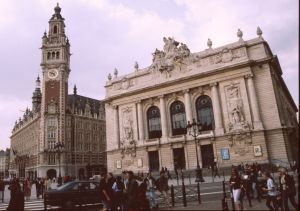

La ville de Lille

Avec ses grandes institutions culturelles, ses événementsd’envergure, ses réseaux de création et son célèbre esprit de fête, la Cité des Flandres n’en finit plus de rayonner comme une incontournable destination culturelle en Europe.
Lille a très tôt fait le pari de la culture comme une voie fondamentale pour se construire et se développer. Un principe a toujours guidé ses choix : l’art et la culture pour tous dans toute la ville.
Avec ses grands équipements, parmi lesquels ses musées de référence et ses scènes incontournables, Lille mène une vie culturelle intense et diversifiée que vient renforcer un riche réseau de lieux d’exposition, de spectacle et de création réparti dans toute la ville.
Lille se distingue également par la dynamique créative qui l’anime. Habitée par de très nombreux artistes, créateurs et compagnies, la ville a su aussi montrer sa capacité a créer des événements collectifs et populaires.
Lille 2004 Capitale Européenne de la Culture, avec ses 2 500 manifestations et plus de 9 000 000 de participants dans toute l’eurorégion, a marqué les esprits en nous ouvrant sur le monde et en mettant en lumière le dynamisme et la créativité des hommes et des femmes de notre territoire.
Pour en savoir plus